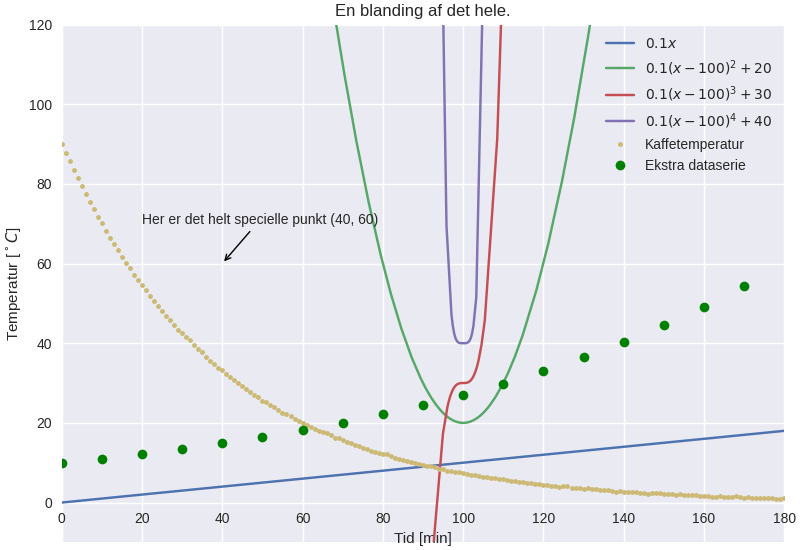

Introduktion til SymPy
Introduktion

SymPy er bibliotek, som velegnet til matematisk arbejde. Følgende citat er taget fra hjemmesiden https://www.sympy.org/.
About
SymPy is a Python library for symbolic mathematics. It aims to become a full-featured computer algebra system (CAS) while keeping the code as simple as possible in order to be comprehensible and easily extensible. SymPy is written entirely in Python.
Grunden til, at vi skal arbejde med dette bibliotek, er, at jeg har planer om, at vi skal kunne udvikle vores egne light-versioner af f.eks. geogebra, maple osv. Ved at kombinere vores viden om pyside6, csv, matplotlib og sympy, skulle vi gerne kunne komme et godt stykke af vejen.
I de følgende afsnit vil I blive præsenteret for diverse anvendelsesmuligheder af SymPy.
Den følgende playliste på youtube giver også en fin introduktion til brugen af SymPy.
https://youtube.com/playlist?list=PLSE7WKf_qqo1T5VV1nqXTj2iNiSpFk72T&si=Rz67T5pcn84Y0jok
Installation
SymPy kan simpelt installeres ved hjælp af pip, og ligesom for arcade, pyside6 og matplotlib er det bedst at gøre dette i et virtuelt miljø.
Hvis I anvender en terminal til at holde styr på jeres virtuelle miljøer, så skal I først oprette og aktivere et nyt virtuelt miljø. Herefter kan I installere sympy ved at skrive følgende i terminalen:
pip install sympy
Hvis I anvender PyCharm, er det en god idé at oprette et nyt projekt, som omhandler vores arbejde med sympy. Sørg for at oprette et nyt virtuelt miljø til dette projekt.
Når projektet er oppe at køre, kan I installere sympy på samme måde, som når I tidligere har installeret arcade, pyside6 og matplotlib. I skal bare sørge for at søge efter sympy.
Det basale - Opstilling af udtryk
For at gøre det hele lidt mere håndgribeligt tager vi udgangspunkt i nogle simple matematikopgaver fra 1.g.
Lad os arbejde med delopgave b. Vi skal altså kunne definere udtrykket
\[\frac{1+a}{3 \left( 2+1 \right)} \cdot \frac{2}{a}\,,\]
og omskrive det til en enkelt brøk. Vi kan se, at vi har et enkelt symbol, a, og resten er tal. Når man skal anvende symboler i sympy, skal man sørge for at definere symbolerne først. I det følgende kodeeksempel gøres der klar til at kunne løse opgaven
1: import sympy as sp 2: # a defineres til at være et symbol 3: a = sp.Symbol("a") 4: 5: # Nu oprettes et udtryk 6: # Læg mærke til at alle gangetegn skal skrives ind. 7: udtryk_b = (1+a)/(3*(2+1))*2/a 8: # Nedenfor printes udtrykket ud på en "pæn" måde 9: sp.pprint(udtryk_b)
2⋅a 2 ─── + ─ 9 9 ─────── a
Diverse omskrivninger
Når man vil omskrive et matematisk udtryk i sympy er der en række funktioner/metoder, som kan anvendes.
sp.expand()- Kan udvidde et udtryk.
1: import sympy as sp 2: x = sp.Symbol("x") 3: udtryk = (x+1)**2 4: print("Oprindeligt udtryk") 5: sp.pprint(udtryk) 6: print("Udviddet udtryk") 7: sp.pprint(sp.expand(udtryk))
Oprindeligt udtryk
2
(x + 1)
Udviddet udtryk
2
x + 2⋅x + 1
sp.factor()- Kan faktorisere et udtryk
1: import sympy as sp 2: x = sp.Symbol("x") 3: udtryk = x**3 - x**2 + x -1 4: print("Oprindeligt udtryk") 5: sp.pprint(udtryk) 6: print("Faktoriseret udtryk") 7: sp.pprint(sp.factor(udtryk))
Oprindeligt udtryk
3 2
x - x + x - 1
Faktoriseret udtryk
⎛ 2 ⎞
(x - 1)⋅⎝x + 1⎠
sp.collect()- Kan samle fælles potenser af led i et udtryk.
1: import sympy as sp 2: x, y, z = sp.symbols("x, y, z") 3: udtryk = x*y + x - 3 + 2*x**2 - z*x**2 + x**3 4: print("Oprindeligt udtryk") 5: sp.pprint(udtryk) 6: print("Samlede led") 7: sp.pprint(sp.collect(udtryk, x))
Oprindeligt udtryk 3 2 2 x - x ⋅z + 2⋅x + x⋅y + x - 3 Samlede led 3 2 x + x ⋅(2 - z) + x⋅(y + 1) - 3
sp.cancel()- Kan omskrive rationelle funktioner (funktioner med brøker) til formen \(\frac{p}{q}\), hvor der kun er én brøkstreg.
1: import sympy as sp 2: x = sp.Symbol("x") 3: udtryk = (3*x/2 -2)/(x-4) + 1/x 4: print("Oprindeligt udtryk") 5: sp.pprint(udtryk) 6: print("Udtryk på én brøkstreg") 7: sp.pprint(sp.cancel(udtryk))
Oprindeligt udtryk
3⋅x
─── - 2
2 1
─────── + ─
x - 4 x
Udtryk på én brøkstreg
2
3⋅x - 2⋅x - 8
──────────────
2
2⋅x - 8⋅x
sp.apart()- Kan opdele en rationel funktion (en funktion med én stor brøkstreg) til mange mindre brøkstreger.
1: import sympy as sp 2: x = sp.Symbol("x") 3: udtryk = (4*x**3 + 21*x**2 + 10*x + 12)/(x**4 + 5*x**3 + 5*x**2 + 4*x) 4: print("Oprindeligt udtryk") 5: sp.pprint(udtryk) 6: print("Opdeling i flere mindre brøker") 7: sp.pprint(sp.apart(udtryk))
Oprindeligt udtryk 3 2 4⋅x + 21⋅x + 10⋅x + 12 ──────────────────────── 4 3 2 x + 5⋅x + 5⋅x + 4⋅x Opdeling i flere mindre brøker 2⋅x - 1 1 3 ────────── - ───── + ─ 2 x + 4 x x + x + 1
sp.simplify()- Forsøger at gøre lidt af det hele, men det er ikke klart, hvad der er den simpleste version af et udtryk.
1: import sympy as sp 2: x = sp.Symbol("x") 3: udtryk =(x**3 + x**2 - x - 1)/(x**2 + 2*x + 1) 4: print("Oprindeligt udtryk") 5: sp.pprint(udtryk) 6: print("Simplificeret udtryk") 7: sp.pprint(sp.simplify(udtryk))
Oprindeligt udtryk 3 2 x + x - x - 1 ─────────────── 2 x + 2⋅x + 1 Simplificeret udtryk x - 1
Derudover er der en række funktioner som kan håndtere trigonometriske udtryk, potensregler, samt eksponential- logaritme-udtryk:
sp.trigsimpsp.expand_trigsp.powsimpsp.expand_power_expsp.expand_power_basesp.powdenestsp.expand_logsp.logcombine
I kan læse mere om hver af funktionerne her:
https://docs.sympy.org/latest/tutorials/intro-tutorial/simplification.html
Tilbage til opgaven
Vi husker lige, at vi skal omskrive \[\frac{1+a}{3 \left( 2+1 \right)} \cdot \frac{2}{a}\]
til en enkelt brøk. Vi kan jo forsøge os med sp.cancel()
1: import sympy as sp 2: # a defineres til at være et symbol 3: a = sp.Symbol("a") 4: 5: # Nu oprettes et udtryk 6: # Læg mærke til at alle gangetegn skal skrives ind. 7: udtryk_b = (1+a)/(3*(2+1))*2/a 8: # Nedenfor printes udtrykket ud på en "pæn" måde 9: print("Oprindeligt udtryk") 10: sp.pprint(udtryk_b) 11: print("Forsøg med at omskrive til en enkelt brøk") 12: sp.pprint(sp.cancel(udtryk_b))
Oprindeligt udtryk 2⋅a 2 ─── + ─ 9 9 ─────── a Forsøg med at omskrive til en enkelt brøk 2⋅a + 2 ─────── 9⋅a
Jo, mindsandten. Det ser ud til at virke.
Opgaver
nu er det jeres tur. I skal løse følgende opgaver vha sympy. I må gerne løse dem allesammen i samme pythonskript, bare I sørger for at printe relevant information ud også. Sørg selv for at definere de relevante symboler. Eksperimenter med de forskellige funktioner i sympy, så I får det rette svar på opgaverne.
Saml følgende udtryk på en brøkstreg:
- \(\frac{5}{(-7)}- 2/(3+a)\)
- \(\frac{\frac{4a}{b}}{\frac{b}{c}}\)
Ophæv følgende parenteser:
- \((5b+a)^2\)
- \(\left( 1+ \frac{a}{b} \right) \left( 1 + a \right)\)
- \(\left( \frac{b}{a}- \frac{a}{b} \right)^2\)
Udvid følgende logaritmeudtryk:
- \(\log \left( x\cdot y \right)\)
- \(\log \left( \frac{3 \cdot x^{1.5}}{y} \right)\)
Løsning af ligninger
I matematiske fag anvender lighedstegnet (=) til at opbygge ligninger. I programmering og dermed også i python anvendes lighedstegnet som tildelingsoperator, altså til f.eks. at oprette variable a = 3. Af den grund kan man ikke anvende lighedstegnet, når man skal oprette ligninger i sympy.
Man kunne tro, at man i stedet kunne anvende == til ligninger, men == anvendes i python til at teste for lighed. Der returneres altså altid True eller False, når vi anvender == i python.
Måden dette er løst på i sympy, er ved at anvende funktionen sp.Eq(), som står for Equation.
Algebraiske løsninger
Til at løse ligninger har sympy som udgangspunkt to funktioner til rådighed nemlig sp.solve() og sp.solveset().
sp.solve()- kan løse ligninger, men returnerer f.eks. ikke noget, hvis der ikke er en løsning.
sp.solveset()- løser også ligningerne, men returnerer altid et sæt af ligninger, også selvom der ikke er nogen løsning, altså et tomt sæt. Dermed er det nmmere at håndtere returværdier fra
sp.solveset()som en del af større programmeringsprojekter.
Lad os se på nogle eksempler, som vi kan løse
- \(3x-2(x+1) = 2x\)
- \(\frac{2}{x+1} = \frac{1}{x-1}\)
Begge ligninger kan vi selvfølgelig løse i hånden, men lad os gøre det vha sympy.
1: import sympy as sp 2: x = sp.Symbol("x") 3: # Gemmer ligning 1 4: ligning_1 = sp.Eq(3*x-2*(x+1), 2) 5: loesning_1_med_solve = sp.solve(ligning_1, x) 6: sp.pprint(loesning_1_med_solve) 7: loesning_1_med_solveset = sp.solveset(ligning_1, x) 8: sp.pprint(loesning_1_med_solveset)
[4]
{4}
I kan se forskellen i de to løsninger ved at sp.solve() har returneret en liste, mens sp.solveset() har returneret et set (som det kan ses af navnet).
Lad os nu løse den anden ligning
1: import sympy as sp 2: x = sp.Symbol("x") 3: # Gemmer ligning 1 4: ligning_2 = sp.Eq(2/(x+1), 1/(x-1)) 5: loesning_2_med_solveset = sp.solveset(ligning_2, x) 6: sp.pprint(loesning_2_med_solveset)
{3}
Opgaver
I skal nu løse følgende ligninger vha sympy.
- \(\frac{1}{x-1}= 2x -3\)
- \(\frac{x}{x+1} +1 = \frac{1}{x+1}-1\)
Numeriske løsninger
Alle de viste eksempler om løsning af ligninger tager udgangspunkt i ligninger, som har algebraiske løsninger. Der findes dog også ligninger, som kun har numeriske løsninger. Af eksempler kan nævnes
- \(e^x = x+2\)
- \(\cos(x) = \frac{1}{4}x\)
For at kunne løse ligninger numerisk skal man anvende sp.nsolve(). Man skal være obmærksom på, at man skal give et gæt som ekstra argument til sp.nsolve(). For at kunne gøre dette, hjælper det at plotte de to sider af ligningerne som hver deres funktioner, og så se, hvor de to funktioner skærer hinanden. I det følgende kan I se, hvordan man kan løse ligningen
\[e^x = x+2\,.\]
Først plottes de to sider af ligningen, som hver deres funktion. For nu anvendes geogebra bare til det.
Ud fra dette plot kan det ses, at der er løsninger omkring henholdsvis \(x=-2\) og \(x=1\). I de følgende to pythoneksempler kan I se de numeriske løsninger til ligningen.
1: import sympy as sp 2: x = sp.Symbol("x") 3: ligning = sp.Eq(sp.exp(x),x+2) 4: loesning_1 = sp.nsolve(ligning,x,-2) # Læg mærke til -2 som sidste argument 5: sp.pprint(loesning_1) 6: loesning_2 = sp.nsolve(ligning,x,1) # Læg mærke til 1 som sidste argument 7: sp.pprint(loesning_2)
-1.84140566043696 1.14619322062058
Det ser sørme ud til at sympy er enig med geogebra. :)
Hvis man kan se, at der er mange numeriske løsninger til en ligning, så kan man med fordel anvende lister med gæt og løkker til at finde alle løsningerne. Her er et eksempel, som løser den samme ligning som før bare med lister og løkker.
1: import sympy as sp 2: x = sp.Symbol("x") 3: ligning = sp.Eq(sp.exp(x),x+2) 4: startgaet = [-2,1] # Her gemmes de samme startgæt som i forrige script 5: loesninger = [] 6: for gaet in startgaet: # Der itereres over alle startgæt 7: loesning = sp.nsolve(ligning, x, gaet) 8: loesninger.append(loesning) 9: sp.pprint(loesninger)
[-1.84140566043696, 1.14619322062058]
For at gøre scriptet endnu kortere kan man også anvende list comprehensions til. Det kan se nogenlunde således ud:
1: import sympy as sp 2: x = sp.Symbol("x") 3: ligning = sp.Eq(sp.exp(x),x+2) 4: startgaet = [-2,1] # Her gemmes de samme startgæt som i forrige script 5: # Her opbygges listen med løsninger vha list comprehension 6: loesninger = [sp.nsolve(ligning,x,gaet) for gaet in startgaet] 7: sp.pprint(loesninger)
[-1.84140566043696, 1.14619322062058]
Som I kan se, giver alle tre eksempler de samme svar, og svarene er enige med den grafiske løsning i geogebra.
Yderligere information om løsning af ligninger vha sympy kan findes her: https://docs.sympy.org/latest/guides/solving/index.html#solving-guide
Opgave
I skal nu finde løsningerne til ligningen
\[\cos(x) = \frac{1}{4}x\,.\]
- Plot de to sider ligningen hver for sig i f.eks. geogebra, for at finde frem til relevante startgæt.
- Skriv jeres eget pythonscript, som anvender
sympytil at løse ligningen.
Funktioner
Funktioner kan behandles på flere måder i sympy. Den simpleste måde er blot at opskrive funktionen som et udtryk. Hvis man gerne vil udregne (mange) funktionsværdier kan man anvende metoden subs(). subs står for substitute, hvor man kan udskifte et symbol med et andet symbol eller en numerisk værdi f.eks.
Lad os antage at vi har funktionen
\[f(x) = x^2+x-2\,,\]
og vi skal finde alle funktionsværdierne når x-værdierne er \({-5, -2, -1, 1, 4, 7}\).
Kan kunne så anvende f.eks. følgende script
1: import sympy as sp 2: x = sp.Symbol("x") 3: x_vaerdier = [-5,-2,-1,1,4,7] 4: f = x**2+x-2 5: for x_vaerdi in x_vaerdier: 6: sp.pprint(f.subs(x, x_vaerdi))
18 0 -2 0 18 54
Man kunne også have anvendt list comprehensions igen:
1: import sympy as sp 2: x = sp.Symbol("x") 3: x_vaerdier = [-5,-2,-1,1,4,7] 4: f = x**2+x-2 5: funktionsvaerdier = [f.subs(x, x_vaerdi) for x_vaerdi in x_vaerdier] 6: sp.pprint(funktionsvaerdier)
[18, 0, -2, 0, 18, 54]
I sympy er der også en funktion, som hedder sp.Function(). Denne anvendes til at arbejde med udefinerede funktioner. Det kunne f.eks. være, hvis man skal løse en differentialligning, hvor man på forhånd ikke kender forskriften på en funktion, men løsningen til differentialligningen netop er en funktionsforskrift. Dette regner jeg dog ikke med, at vi skal arbejde med i programmering.
Infinitesimalregning
Mmm sikke et dejligt ord. Prøv lige at smage på det. :) I stedet kunne man have skrevet differential- og integralregning. Lad os kort se på, hvordan man differentiere og integrere vha sympy.
Differentialregning
I kender jo allerede alt til differentialregning, og hvad det går ud på, så lad os bare tage udgangspunkt i et eksempel. Vi vil gerne differentiere følgende (besværlige) funktion
\[f(x) = \frac{3 x^2-\sqrt{x}}{2+x}\,.\]
Dette kan vi gøre med funktionen sp.diff(), som deler navn med en tilsvarende metode. Lad os se hvordan det virker.
1: import sympy as sp 2: x = sp.Symbol("x") 3: f = (3*x**2 - sp.sqrt(x))/(2+x) 4: print("Med funktionen sp.diff") 5: sp.pprint(sp.diff(f,x,1)) # læg mærke til x og 1 som de sidste argumenter. 6: print("Med metoden .diff") 7: sp.pprint(f.diff(x,1)) # Læg mærke til x og 1 som de sidste argumenter.
Med funktionen sp.diff
1
2 6⋅x - ────
-√x + 3⋅x 2⋅√x
- ────────── + ──────────
2 x + 2
(x + 2)
Med metoden .diff
1
2 6⋅x - ────
-√x + 3⋅x 2⋅√x
- ────────── + ──────────
2 x + 2
(x + 2)
For både funktione og metoden gælder det, at man skal angive, hvilken variabel man differentiere med hensyn til og hvor mange gange, man vil differentiere. I det forrige eksempel var det variablen x og vi differentierede kun én gang. Hvis man kun vil differentiere én gang, kan man udelade det sidste argument.
Hvis man bare gerne vil vise, at man skal differentiere et udtryk, men rent faktisk ikke vil gøre det med det samme, skal man anvende funktionen sp.Derivative. Lad os se, hvordan det virker:
1: import sympy as sp 2: x = sp.Symbol("x") 3: f = (3*x**2 - sp.sqrt(x))/(2+x) 4: #fm står for f mærke 5: fm = sp.Derivative(f,x) 6: print("Viser bare at vi vil differentiere:") 7: sp.pprint(fm) 8: # Hvis man gerne vil udføre differentiationen kan man anvende metoden 9: # .doit() 10: print("Her er resultatet af differentiationen:") 11: sp.pprint(fm.doit()) 12:
Viser bare at vi vil differentiere:
⎛ 2⎞
d ⎜-√x + 3⋅x ⎟
──⎜──────────⎟
dx⎝ x + 2 ⎠
Her er resultatet af differentiationen:
1
2 6⋅x - ────
-√x + 3⋅x 2⋅√x
- ────────── + ──────────
2 x + 2
(x + 2)
Opgaver
I skal nu finde de afledte funktioner til følgende funktioner vha sympy. Se om I ikke kan finde alle tre afledte funktioner i ét script.
\begin{align*} f(x) &= \left( 8x^4+4 \right)\cdot \left( 3x^3-2x+7 \right) \\ g(x) &= \frac{-3x^2-5x-6}{x-7} \\ h(x) &= \sqrt{9x} - \frac{4}{x} \end{align*}Integralregning
På samme måde som der indenfor differentialregning er sp.diff og sp.Derivative, så er der sp.integrate og sp.Integral inden for integralregningen i sympy.
Stamfunktioner
Vi tager udgangspunkt i funktionen
\[f(x) = x^3 \left( x-1 \right)\,,\]
som vi gerne vil finde stamfunktionen for. Det kan gøres på følgende måde
1: import sympy as sp 2: x = sp.Symbol("x") 3: f = x**3 * (x-1) 4: # Med F menes stamfunktion til f 5: F = sp.integrate(f,x) 6: sp.pprint(F) 7: # Vi viser kun, at vi har tænkt os at integrere 8: F = sp.Integral(f,x) 9: sp.pprint(F) 10: # Vi printer det faktiske integral ud 11: sp.pprint(F.doit()) 12:
5 4 x x ── - ── 5 4 ⌠ ⎮ 3 ⎮ x ⋅(x - 1) dx ⌡ 5 4 x x ── - ── 5 4
For alle stamfunktioner skal I lægge mærke til at der ikke inkluderes en integrationskonstant, men det er sympy ikke det eneste CAS-værktøj, som undlader.
Bestemte integraler
Som bekendt kan integralregning anvendes til finde arealer under kurver, hvilket kaldes besteme integraler. Med bestemte integraler skal man inkludere nedre og øvre integrationsgrænser. I sympy foregår det ved at indsætte en tuple indeholdende integrationsvariabel, nedre grænse og øvre grænse.
I det følgende tages der udgangspunkt i forrige funktion, som nu vil blive integreret fra 1 til 2:
1: import sympy as sp 2: x = sp.Symbol("x") 3: f = x**3 * (x-1) 4: bestemt_integral = sp.integrate(f,(x, 1, 2)) # tuplen er (x, 1, 2) 5: sp.pprint(bestemt_integral) 6: # Vi vil gerne have svaret i decimaltal 7: # Vi bruger metoden .evalf() 8: sp.pprint(bestemt_integral.evalf(4)) # Vi vil kun have 4 betydende cifre 9: # Vi kan igen blot vise, at vi vil udføre et bestemt integral 10: bestemt_integral = sp.Integral(f,(x, 1, 2)) 11: sp.pprint(bestemt_integral) 12: # Vi printer det faktiske integral ud 13: sp.pprint(bestemt_integral.doit().evalf(4)) 14:
49 ── 20 2.450 2 ⌠ ⎮ 3 ⎮ x ⋅(x - 1) dx ⌡ 1 2.450
Opgaver
Udfør følgende ubestemte integraler (altså find stamfunktionerne) vha sympy. \(e^x\) kan skrives som sp.exp(x) i sympy, mens eulers tal \(e=2.71\dots\) kan skrives som sp.E.
Udfør følgende bestemte integraler (altså find arealet under kurven).
\begin{align*} &\int_1^2 \frac{x^2-x}{x} \,dx \\ &\int_0^1 x^2+1 \,dx \end{align*}Ekstra udfordring.
Bestem \(a\) i følgende ligning:
\[\int_{-a}^{10} x^a \,dx = 1\]
Hint til udfordringen: I skal anvende både integration og løsning af ligninger.
Plot af grafer
Sympy har sit eget plotte-modul, som kan anvende forskellige backends herunder matplotlib. Vi har tidligere arbejdet med matplotlib, så vi tager udgangspunkt i det. Sørg derfor for at have matplotlib installeret i samme virtuelle miljø som sympy.
Direkte med sympy
En generel introduktion til at plotte vha sympy kan findes her: https://docs.sympy.org/latest/modules/plotting.html
Her er et udsnit af dokumentationen af brugen af plot-funktionen i sympy.
sympy.plotting.plot.plot(*args, show=True, **kwargs)[source]
Plots a function of a single variable as a curve.
Parameters:
- args
The first argument is the expression representing the function of single variable to be plotted.
The last argument is a 3-tuple denoting the range of the free variable. e.g.
(x, 0, 5)Typical usage examples are in the following:
Plotting a single expression with a single range.
plot(expr, range, **kwargs)Plotting a single expression with the default range (-10, 10).
plot(expr, **kwargs)Plotting multiple expressions with a single range.
plot(expr1, expr2, ..., range, **kwargs)Plotting multiple expressions with multiple ranges.
plot((expr1, range1), (expr2, range2), ..., **kwargs)It is best practice to specify range explicitly because default range may change in the future if a more advanced default range detection algorithm is implemented.
- show
bool, optional
The default value is set to
True. Set show toFalseand the function will not display the plot. The returned instance of the Plot class can then be used to save or display the plot by calling thesave()andshow()methods respectively.- line_color
string, or float, or function, optional
Specifies the color for the plot. See Plot to see how to set color for the plots. Note that by setting
line_color, it would be applied simultaneously to all the series.- title
str, optional
Title of the plot. It is set to the latex representation of the expression, if the plot has only one expression.
- label
str, optional
The label of the expression in the plot. It will be used when called with
legend. Default is the name of the expression. e.g.sin(x)- xlabel
str or expression, optional
Label for the x-axis.
- ylabel
str or expression, optional
Label for the y-axis.
- xscale
‘linear’ or ‘log’, optional
Sets the scaling of the x-axis.
- yscale
‘linear’ or ‘log’, optional
Sets the scaling of the y-axis.
- axis_center
(float, float), optional
Tuple of two floats denoting the coordinates of the center or {‘center’, ‘auto’}
- xlim
(float, float), optional
Denotes the x-axis limits,
(min, max).- ylim
(float, float), optional
Denotes the y-axis limits,
(min, max).- annotations
list, optional
A list of dictionaries specifying the type of annotation required. The keys in the dictionary should be equivalent to the arguments of the
matplotlib'sannotate()method.- markers
list, optional
A list of dictionaries specifying the type the markers required. The keys in the dictionary should be equivalent to the arguments of the
matplotlib'splot()function along with the marker related keyworded arguments.- rectangles
list, optional
A list of dictionaries specifying the dimensions of the rectangles to be plotted. The keys in the dictionary should be equivalent to the arguments of the
matplotlib'sRectangleclass.- fill
dict, optional
A dictionary specifying the type of color filling required in the plot. The keys in the dictionary should be equivalent to the arguments of the
matplotlib'sfill_between()method.- adaptive
bool, optional
The default value is set to
True. Set adaptive toFalseand specifynb_of_pointsif uniform sampling is required.The plotting uses an adaptive algorithm which samples recursively to accurately plot. The adaptive algorithm uses a random point near the midpoint of two points that has to be further sampled. Hence the same plots can appear slightly different.
- depth
int, optional
Recursion depth of the adaptive algorithm. A depth of value \(n\) samples a maximum of \(2^n\) points.
If the
adaptiveflag is set toFalse, this will be ignored.- nb_of_points
int, optional
Used when the
adaptiveis set toFalse. The function is uniformly sampled atnb_of_pointsnumber of points.If the adaptive flag is set to
True, this will be ignored.- size
(float, float), optional
A tuple in the form (width, height) in inches to specify the size of the overall figure. The default value is set to
None, meaning the size will be set by the default backend.
Her kommer en række eksempler. En graf
1: import sympy as sp 2: x = sp.Symbol("x") 3: funktion_1 = x**2 4: 5: sp.plot(funktion_1, (x,-5, 5))
To grafer i samme x-interval
1: import sympy as sp 2: x = sp.Symbol("x") 3: funktion_1 = x**2 4: funktion_2 = x**3 -x +2 5: 6: sp.plot(funktion_1, funktion_2, (x,-3, 3), legend=True)
Flere grafer med forskellige x-intervaller
1: import sympy as sp 2: x = sp.Symbol("x") 3: funktion_1 = x**2 -2*x+2 4: funktion_2 = sp.cos(x**2) 5: 6: sp.plot((funktion_1, (x, -3, 3)), (funktion_2, (x,-2, 5)), legend=True)
En med næsten det hele, tak
1: import sympy as sp 2: x = sp.Symbol("x") 3: funktion_1 = x**2 -2*x+4 4: funktion_2 = sp.cos(x**2) 5: 6: sp.plot((funktion_1, (x, -3, 3)), 7: (funktion_2, (x,-2, 5)), 8: legend=True, 9: title= "En med næsten det hele, tak", 10: xlabel = "x-aksen", 11: ylabel = "y-aksen", 12: xlim = (-5,7), 13: ylim = (- 3, 6), 14: annotations = [{"xy": (1,3), "text": "Her er 'toppunktet'.", "xytext": (0,2), "arrowprops":dict(arrowstyle='->', lw=1)}], 15: markers = [{"args":[-2,3, 'go']}], 16: )
Kombination af sympy og matplotlib
Hvis man skal udarbejde endnu mere avancerede plots eller ønsker endnu større frihed, er det en god idé at anvende matplotlib-funktionerne direkte i stedet for at bruge plottefunktionerne fra sympy. I det følgende eksempel kan det ses, hvordan plottet en med næsten det hele, tak fra tidligere kan dannes ved at kombinere sympy og matplotlib.
1: import matplotlib 2: import matplotlib.pyplot as plt 3: import sympy as sp 4: 5: # Som set tidligere med anvendelse af sympy 6: x = sp.Symbol("x") 7: 8: 9: def flyt_sp_plot_til_ax(sp_plot, ax): 10: """Denne funktion tager et sympy-plot og en matplotlib ax som parameter, 11: og sørger for at indsætte sympy-plottet i det allerede eksisterende ax.""" 12: backend = sp_plot.backend(sp_plot) 13: backend.ax = ax 14: backend._process_series(backend.parent._series, ax, backend.parent) 15: backend.ax.spines["right"].set_color("none") 16: backend.ax.spines["bottom"].set_position("zero") 17: backend.ax.spines["top"].set_color("none") 18: plt.close(backend.fig) 19: 20: 21: # Opretter figur og akse som set tidligere mens vi arbejdede med at plotte i matplotlib 22: fig, ax = plt.subplots(layout="constrained") 23: 24: funktion_1 = x**2 - 2 * x + 4 25: plot_1 = sp.plot(funktion_1, (x, -3, 3), legend=True, show=False) 26: flyt_sp_plot_til_ax(plot_1, ax) 27: 28: funktion_2 = sp.cos(x**2) 29: plot_2 = sp.plot(funktion_2, (x, -2, 5), legend=True, show=False) 30: flyt_sp_plot_til_ax(plot_2, ax) 31: 32: groent_punkt = (-2, 3) 33: # Det grønne punkt plottes nu direkte gennem matplotlib i stedet for markers gennem sympy 34: ax.plot(*groent_punkt, "go") 35: 36: # Annotationen sker her direkte gennem matplotlib i stedet for gennem sympy 37: ax.annotate( 38: "Her er 'toppunktet'.", 39: (1, 3), 40: xytext=(0, 2), 41: arrowprops={"arrowstyle": "->", "lw": 1}, 42: ) 43: 44: # Her sættes aksetitler, aksegrænser og plottitel direkte i matplotlib i stedet for gennem sympy 45: ax.set_xlabel("x-aksen") 46: ax.set_ylabel("y-aksen") 47: ax.set_xlim(-5, 7) 48: ax.set_ylim(-3, 6) 49: ax.set_title("En med næsten det hele, tak\nMatplotlib + sympy") 50: 51: # Endelig plottes hele figuren gennem matplotlib 52: plt.show()
Pointen med at anvende matplotlib direkte er friheden det giver. Det er nu muligt at plotte både funktioner og punktserier i samme plot, og man kan anvende de redskaber, man allerede kender fra matplotlib.
Her kommer et eksempel, som både plotter vores tidligere kendte dataserier over kaffetemperaturer sammen med forskellige funktioner.
1: import csv 2: import matplotlib.pyplot as plt 3: import sympy as sp 4: 5: # Standard sympy 6: x = sp.Symbol("x") 7: 8: 9: # Denne funktion kender I fra sympyeksemplet fra tidligere 10: def flyt_sp_plot_til_ax(sp_plot, ax): 11: """Denne funktion tager et sympy-plot og en matplotlib ax som parameter, 12: og sørger for at indsætte sympy-plottet i det allerede eksisterende ax.""" 13: backend = sp_plot.backend(sp_plot) 14: backend.ax = ax 15: backend._process_series(backend.parent._series, ax, backend.parent) 16: backend.ax.spines["right"].set_color("none") 17: backend.ax.spines["bottom"].set_position("zero") 18: backend.ax.spines["top"].set_color("none") 19: plt.close(backend.fig) 20: 21: 22: # Dette kender næsten fra tidligere fra matplotlibeksemplerne 23: kaffedata = [[], []] 24: with open("Afkoeling_af_kaffe_nul_grader_udenfor.csv") as datafil: 25: csv_laeser = csv.reader(datafil, delimiter=",") 26: next(csv_laeser) # Springer første linje over 27: for linje in csv_laeser: 28: # På højre side af lighedstegnet anvendes en list comprehension 29: # hvor hvert element omdannes til float 30: # På venstre side udpakkes den nye liste til variablerne tid og temperatur 31: tid, temperatur = (float(element) for element in linje) 32: 33: # Tid og temperatur tilføjes til listerne tider og temperaturer 34: kaffedata[0].append(tid) 35: kaffedata[1].append(temperatur) 36: 37: # Standard fra matplotlib 38: fig, ax = plt.subplots(layout="constrained") 39: 40: # Lidt forskellige funktioner som alle skal plottes 41: funktioner = [0.1 * (x - 100) ** i + 10 * i for i in range(1, 5)] 42: 43: for funktion in funktioner: 44: plot = sp.plot(funktion, (x, 0, 180), legend=True, show=False) 45: flyt_sp_plot_til_ax(plot, ax) 46: 47: 48: # Plotter kaffedata 49: ax.plot(*kaffedata, ".", label="Kaffetemperatur") 50: 51: 52: # Laver en ekstra dataserie og plotter den 53: ekstra_dataserie = [range(0, 180, 10), [10 * 1.01**i for i in range(0, 180, 10)]] 54: ax.plot(*ekstra_dataserie, "go", label="Ekstra dataserie") 55: 56: 57: # Vil gerne pege på et helt specielt punkt 58: specielt_punkt = (40, 60) 59: ax.annotate( 60: f"Her er det helt specielle punkt {specielt_punkt}", 61: specielt_punkt, 62: xytext=(20, 70), 63: arrowprops={"arrowstyle": "->", "lw": 1}, 64: ) 65: 66: # Standard matplotlib 67: ax.set_title("En blanding af det hele.") 68: ax.set_xlabel("Tid [min]") 69: ax.set_ylabel(r"Temperatur [${}^\circ C$]") 70: ax.set_xlim(0, 180) 71: ax.set_ylim(-10, 120) 72: ax.legend() 73: plt.show()

Opgave
Forsøg at skabe jeres eget plot vha. sympy, som ligner dette. Det behøver ikke at være fuldstændig identisk.
Funktionen har forskriften
\[f(x)= -0.5x - \sin \left( 0.6 x \right) + 6\,.\]
Punkterne har følgende koordinater:
- \(A = (0,6)\)
- \(B = (5, 3.36)\)
- \(C = (7, 3.37)\)
- \(D = (11.18, 0)\)
Husk at I kan finde flere oplysninger om brugen af plottefunktionen i sympy her: https://docs.sympy.org/latest/modules/plotting.html
Ellers kan I tage udgangspunkt i eksemplerne.
Fra streng til udtryk
Hvad kan man gøre, hvis man gerne vil have en matematisk funktion, som input fra brugeren eller måske læse den fra en tekststreng?
Jo, den sikreste måde at gøre det på er ved at anvende funktionen parse_expr fra sympy.parsing.sympy_parser. Denne funktion er i stand til at omdanne en almindelig tekststreng til et sympy-udtryk samtidig med, at der udføres en række tjek af strengen, så man ikke kommer til at køre ondsindet kode. Sympy foreslår selv først funktionen sympify, som noget enklere omdanner en tekststreng til et sympy-udtryk. Problemet med denne funktion er dog, at den anvender eval, som uden videre omdanner tekststrenge til pythonkode og kører det. I sådanne tilfælde skal man være helt sikker på, at man kan stole på at en eventuel bruger, kun skriver faktisk anvendelige funktioner, som tekststreng og ikke begynder at skrive ondsindet kode i stedet for.
Her kan I se et meget simpelt program som kan plotte brugerdefineret funktion i et brugerdefineret interval på x-aksen. Det er anvendelsen af parse_expr, som er den relevante del i eksemplet.
1: import sympy as sp 2: from sympy.parsing.sympy_parser import parse_expr 3: 4: x = sp.Symbol("x") 5: 6: print("Velkommen til funktionsplotteren!") 7: funktionsstreng = input("Skriv den funktion, som du gerne vil plotte. Husk at opløftet hedder **, og at x er den uafhængige variabel> ") 8: minimum = float(input("Indtast den nedre grænse for plottet på x-aksen> ")) 9: maximum = float(input("Indtast den øvre grænse for plottet på x-aksen> ")) 10: funktion = parse_expr(funktionsstreng) 11: sp.plot(funktion, (x, minimum, maximum))
Opgave
Skriv jeres eget program, som spørger brugeren ind til en ligning, eller måske et ligningssystem, som sympy så kan løse. Brug jeres viden fra de tidligere eksempler med sympy.
Løsning af matematikopgave
Som den endelige prøve på jeres færdigheder inden for brugen af sympy, skal I løse følgende matematikopgaver vha netop sympy.
I kan finde bilaget med hårdhed her: Bilag_Haardhed.csv